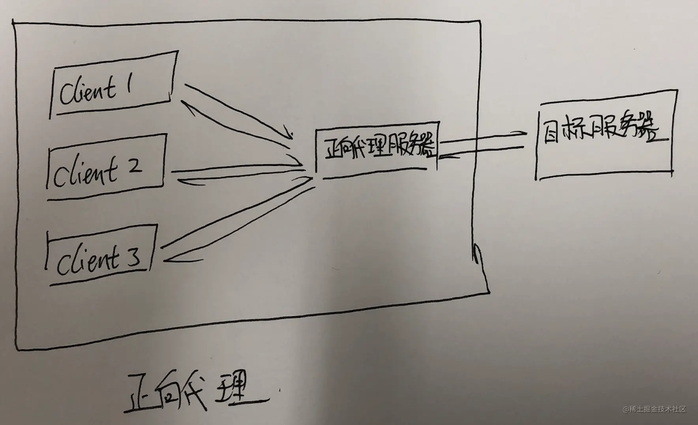
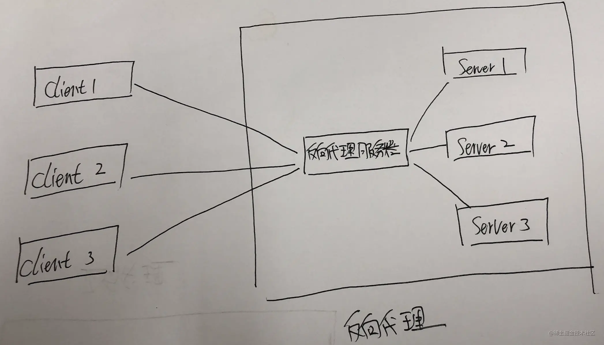

客户端(请求方), 想要向服务方发起请求. 但是碍于面子你主动找到了第三方作为代理向服务方发送请求, 这种情况就是常说的正向代理. 正向代理在互联网中的使用主要是科学上网, 你想访问谷歌但是碍于防火墙你只能通过 vpn 服务器作为代理才能访问.

反向代理在互联网中的使用主要是实现负载均衡. 当你访问某个网站的时候, 反向代理服务器会从当前网站的所有服务器中选择一个空闲的服务器为你响应. 用于均衡每台服务器的负载率.
